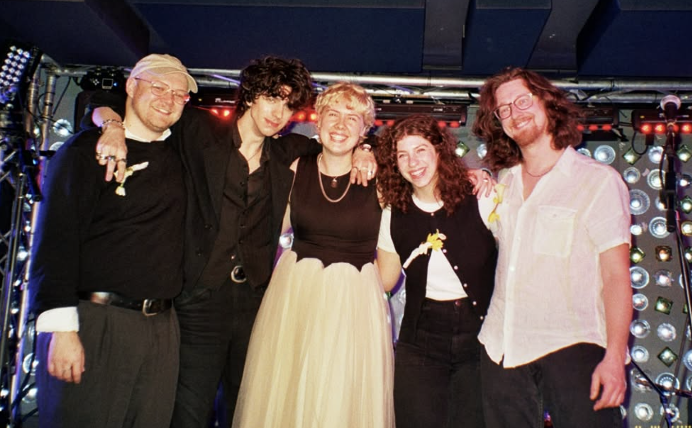

Volena

Professional Bio
Singer-songwriter Maddie Grandusky-Howe (they/them) began writing songs to simultaneously process past trauma and document their queer, gender-fluid coming of age. Their lyrical and emotional range has culminated in Volena, joined by guitarists Billy Gartrell (he/him) and Laura Supnik (she/her), bassist Ross Langdon Page (he/him), and drummer John Supnik (he/him).Although the band is newly formed, its members have made their mark in various music communities across the United States—playing in Rochester, New York; Asheville, North Carolina; and Lancaster, Pennsylvania, with Brooklyn, New York uniting them in 2023.
Influenced by artists like Angel Olsen, Big Thief, Rilo Kiley, and Haley Heynderickx, Volena explores the internal and external conflict between emotion and reaction. The songs serve as both a prayer and a means of processing: a magnifying glass on love and abuse and how the two can coexist.